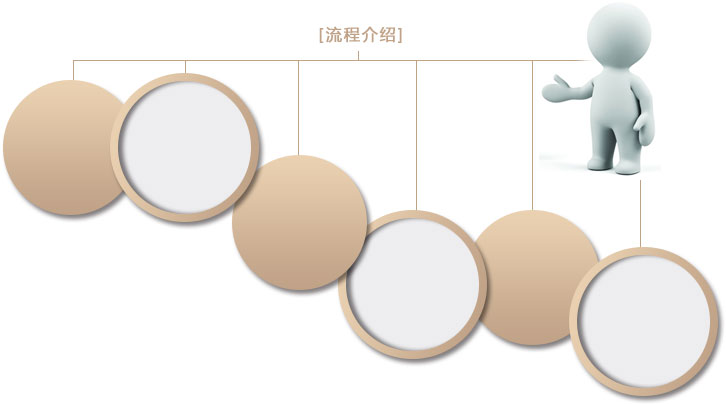

集典艺购 > 艺术软装 > 会所
业务介绍
随着城市化建设迅猛崛起，各个城市都在努力朝着经济蓬勃发展、生态良性循环、人民安居乐业、城市山清水秀的现代化大都市这个目标建设。这是社会精神文明进步的体现，是人类物质文化生活提高后的必然追随着城市化建设迅猛崛起，各个城市都在努力朝着经济蓬勃发展、生态良性循环、人民安居乐业、城市山清水秀的现代化大都市这个目标建设。这是社会精神文明进步的体现，是人类物质文化生活提高后的必然追随着城市化建设迅猛崛起，各个城市都在努力朝着经济蓬勃发展、生态良性循环、人民安居乐业、城市山清水秀的现代化大都市这个目标建设。这是社会精神文明进步的体现，是人类物质文化生活提高后的必然追随着城市化建设迅猛崛起，各个城市都在努力朝着经济蓬勃发展、生态良性循环、人民安居乐业、城市山清水秀的现代化大都市这个目标建设。这是社会精神文明进步的体现，是人类物质文化生活提高后的必然追随着城市化建设迅猛崛起，各个城市都在努力朝着经济蓬勃发展、生态良性循环、人民安居乐业、城市山清水秀的现代化大都市这个目标建设。这是社会精神文明进步的体现，是人类物质文化生活提高后的必然追随着城市化建设迅猛崛起，各个城市都在努力朝着经济蓬勃发展、生态良性循环、人民安居乐业、城市山清水秀的现代化大都市这个目标建设。这是社会精神文明进步的体现，是人类物质文化生活提高后的必然追随着城市化建设迅猛崛起，各个城市都在努力朝着经济蓬勃发展、生态良性循环、人民安居乐业、城市山清水秀的现代化大都市这个目标建设。这是社会精神文明进步的体现，是人类物质文化生活提高后的必然追随着城市化建设迅猛崛起，各个城市都在努力朝着经济蓬勃发展、生态良性循环、人民安居乐业、城市山清水秀的现代化大都市这个目标建设。这是社会精神文明进步的体现，是人类物质文化生活提高后的必然追随着城市化建设迅猛崛起，各个城市都在努力朝着经济蓬勃发展、生态良性循环、人民安居乐业、城市山清水秀的现代化大都市这个目标建设。这是社会精神文明进步的体现，是人类物质文化生活提高后的必然追随着城市化建设迅猛崛起，各个城市都在努力朝着经济蓬勃发展、生态良性循环、人民安居乐业、城市山清水秀的现代化大都
